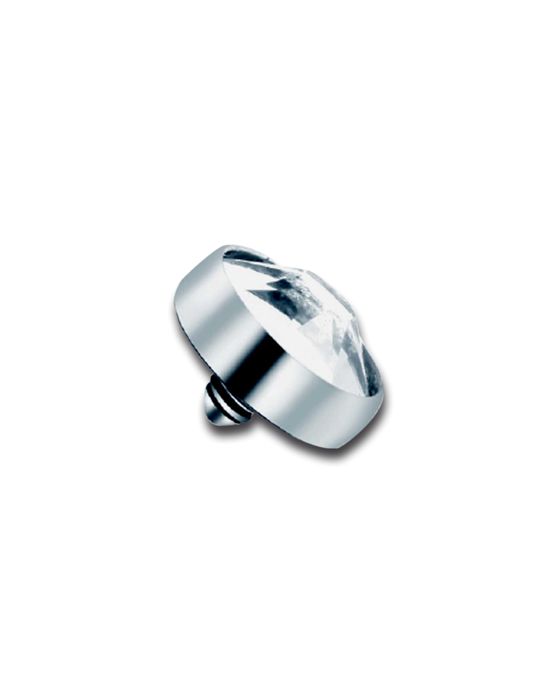
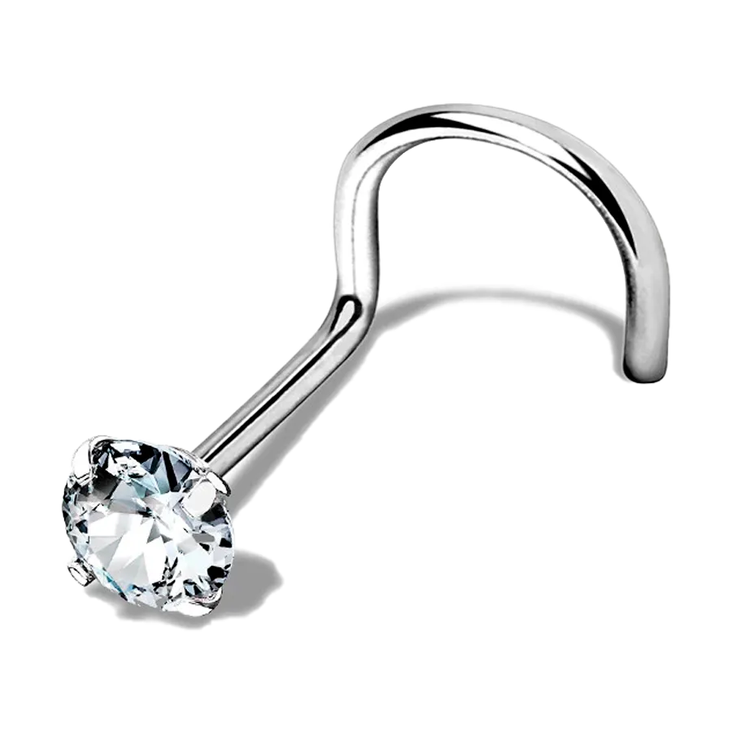
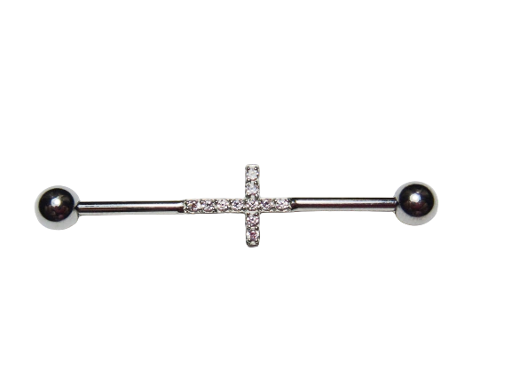
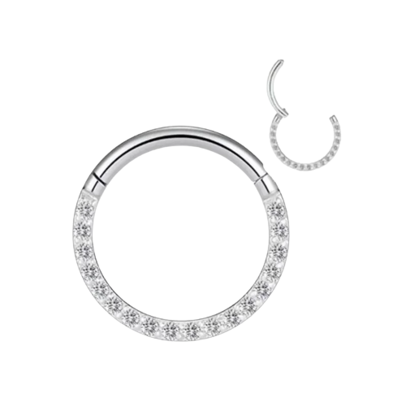

Produtos
PIERCING DA GAMA (fazemos perfuraçao no estudio)

160 reais, fazemos 2x de 80,00 reais
Descrição do produto
Piercing microdermal de titânio com cristal.
Tenho de 3mm, 4mm e 5mm, escolha o tamanho no campo indicado.
Valor unitário (não é o par).
(junto com a perfuraçao no estudio)

100 reias, fazemos 2x de 50,00
Descrição do produto
Prata 925 Légítima e Maciça
Pedra Zircônia 1mm
Jóia Antialérgica
Modelo Nostril
(junto com a perfuraçao no estudio)
fazemos 2x de 50,00

160 reais fazemos 2x de 80,00
descriçao do produto
Piercing Transversal em Prata 925.
Largura do Piercing: aproximadamente 1 MM.
Vendido Indivualmente
(junto com a perfuraçao no estudio)
.png)
160,00 fazemos 2x de 80,00 reais
descrição do produto
Um piercing clássico de bolinha de zircônia para usar no umbigo.
é feito de aço cirúrgico e possui uma bolinha com 4mm de diâmetro e outra com 6mm
Material, Aço Cirúrgico, Pedra Zircônia
(junto com a perfuraçao no estudio)

160,00 fazemos 2x de 80,00
Descriçao do produto
Material Prata 995
Pedras Zircônia
Diâmetro aproximadamente 25 mm
Argola Life Glam Prata Cravejado 25 mm
piercing septo argola
(junto com a perfuraçao no estudio)